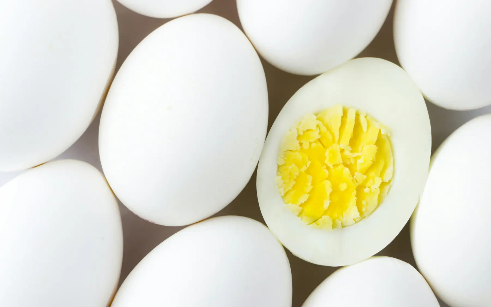

Protein ihtiyacı: spor yapanlar ve yapmayanlar içinProtein needs, for active and less active people
Protein son yıllarda neredeyse her ürünün etiketine eklenen bir kelime oldu. Peki gerçekte ne kadarına ihtiyacımız var?Protein has found its way onto almost every food label in recent years. So how much do we actually need?

Temel ihtiyaç
Sağlıklı ve hareketsiz bir yetişkin için önerilen miktar günde kilo başına yaklaşık 0,8 g. 70 kg bir kişi için bu 56 g protein eder. Bu değer eksikliği önlemek için belirlenmiş bir alt sınırdır; birçok kişi için biraz daha fazlası faydalı olabilir.
| Grup | Günlük öneri (g/kg) |
|---|---|
| Hareketsiz yetişkin | 0,8–1,0 |
| Kilo verirken kas kütlesini korumak isteyenler | 1,2–1,6 |
| Düzenli egzersiz yapanlar | 1,2–2,0 |
| 65 yaş üzeri | 1,0–1,2 |
| Gebelik (2. ve 3. trimester) | yaklaşık 1,1 |
Kronik böbrek hastalığında protein miktarı hekim ve diyetisyen tarafından ayrıca belirlenmelidir.
Öğünlere dağıtmak neden önemli?
Kas protein sentezini desteklemek için tüm proteini akşam yemeğinde almak yerine her öğünde yaklaşık 20–40 g hedeflemek daha etkili. Kahvaltı çoğu zaman en zayıf halkadır: yalnızca çay ve simitle geçen bir sabah, günün proteinini akşama yığar.
Kaynaklar ve yaklaşık miktarlar
| Besin | Porsiyon | Protein |
|---|---|---|
| Yumurta | 2 adet | ~12 g |
| Süzme yoğurt | 150 g | ~15 g |
| Beyaz peynir | 60 g | ~10 g |
| Tavuk göğsü (pişmiş) | 100 g | ~30 g |
| Somon | 120 g | ~25 g |
| Haşlanmış mercimek | 1 kase (200 g) | ~18 g |
| Haşlanmış nohut | 1 kase (160 g) | ~14 g |
| Ton balığı (süzülmüş) | 80 g | ~20 g |
Baklagil ve tahılı aynı gün içinde birlikte tüketmek bitkisel proteinlerin amino asit dengesini tamamlar; mercimekli bulgur pilavı iyi bir örnek.
Toz protein gerekli mi?
Çoğu kişi ihtiyacını besinlerden karşılayabilir. Toz protein, antrenman sonrasında pratiklik ya da ihtiyacın yüksek olduğu dönemler için bir seçenek; zorunluluk değil. Tercih ederseniz bağımsız laboratuvar testinden geçmiş, içerik listesi kısa ürünleri seçin; lisanslı sporcuysanız doping listesine karşı dikkatli olun.
Fazlası zararlı mı?
Sağlıklı böbreklere sahip kişilerde kilo başına 2 g’a kadar protein alımının zararlı olduğuna dair güçlü bir kanıt yok. Ancak çok yüksek proteinli diyetler lifi, sebzeyi ve karbonhidratı gereğinden fazla azaltabilir. Denge burada da önemli.
Örnek bir gün (yaklaşık 100 g protein)
- Kahvaltı: 2 yumurtalı menemen, 60 g beyaz peynir, tam buğday ekmeği (~25 g)
- Ara öğün: 150 g süzme yoğurt ve meyve (~15 g)
- Öğle: 1 kase mercimek çorbası, tavuklu salata (~35 g)
- Akşam: 120 g somon, bulgur pilavı, cacık (~30 g)
The baseline
The recommended amount for a healthy, inactive adult is about 0.8 g per kilo of body weight per day, or 56 g for someone weighing 70 kg. That figure is a minimum set to prevent deficiency; for many people a little more is helpful.
| Group | Daily recommendation (g/kg) |
|---|---|
| Inactive adults | 0.8–1.0 |
| Preserving muscle while losing weight | 1.2–1.6 |
| People who exercise regularly | 1.2–2.0 |
| Adults over 65 | 1.0–1.2 |
| Pregnancy (2nd and 3rd trimester) | about 1.1 |
With chronic kidney disease, protein intake should be set individually by your doctor and dietitian.
Why spreading it across meals matters
To support muscle protein synthesis, aiming for roughly 20–40 g at each meal works better than eating most of it at dinner. Breakfast is often the weak link: a morning of just tea and a simit piles the day’s protein into the evening.
Sources and approximate amounts
| Food | Portion | Protein |
|---|---|---|
| Eggs | 2 | ~12 g |
| Strained yogurt | 150 g | ~15 g |
| White cheese | 60 g | ~10 g |
| Chicken breast (cooked) | 100 g | ~30 g |
| Salmon | 120 g | ~25 g |
| Cooked lentils | 1 bowl (200 g) | ~18 g |
| Cooked chickpeas | 1 bowl (160 g) | ~14 g |
| Tuna (drained) | 80 g | ~20 g |
Eating legumes and grains on the same day completes the amino acid profile of plant proteins; lentil and bulgur pilaf is a good example.
Do you need protein powder?
Most people can meet their needs from food. Protein powder is a convenient option after training or when needs are high, not a requirement. If you use it, choose independently tested products with a short ingredient list, and if you are a licensed athlete, check them against anti-doping lists.
Can too much be harmful?
For people with healthy kidneys there is no strong evidence that up to 2 g per kilo is harmful. But very high-protein diets can crowd out fibre, vegetables and carbohydrate. Balance still matters.
A sample day (about 100 g protein)
- Breakfast: menemen with 2 eggs, 60 g white cheese, wholewheat bread (~25 g)
- Snack: 150 g strained yogurt with fruit (~15 g)
- Lunch: a bowl of lentil soup and a chicken salad (~35 g)
- Dinner: 120 g salmon, bulgur pilaf, cacık (~30 g)
Kaynaklar
- Jäger R, et al. International Society of Sports Nutrition Position Stand: protein and exercise. J Int Soc Sports Nutr. 2017;14:20.
- Morton RW, et al. A systematic review, meta-analysis and meta-regression of the effect of protein supplementation on resistance training-induced gains in muscle mass and strength. Br J Sports Med. 2018;52:376–384.
- Bauer J, et al. Evidence-based recommendations for optimal dietary protein intake in older people: a position paper from the PROT-AGE Study Group. J Am Med Dir Assoc. 2013;14(8):542–559.
- EFSA Panel on Dietetic Products, Nutrition and Allergies. Scientific Opinion on Dietary Reference Values for protein. EFSA Journal. 2012;10(2):2557.